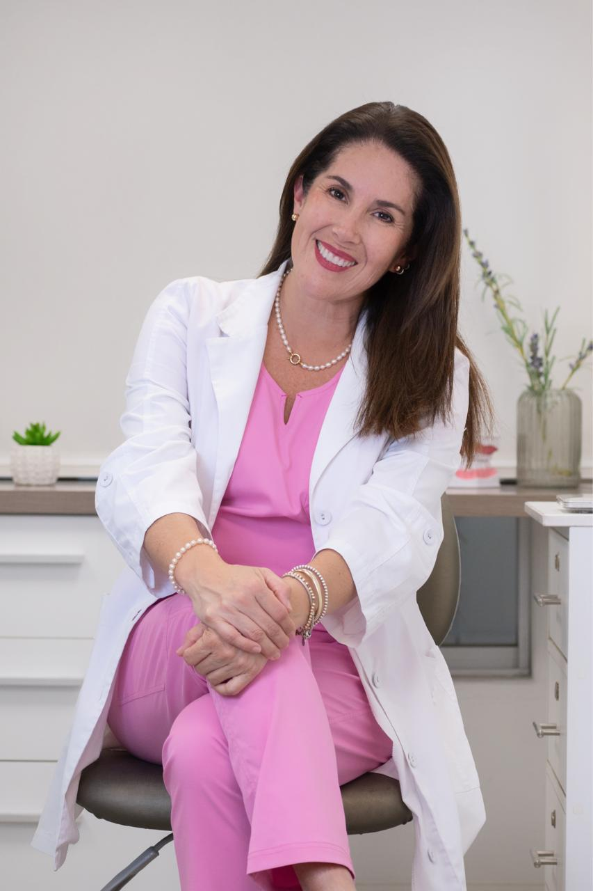
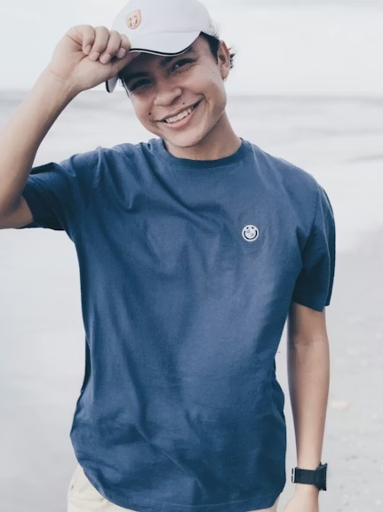
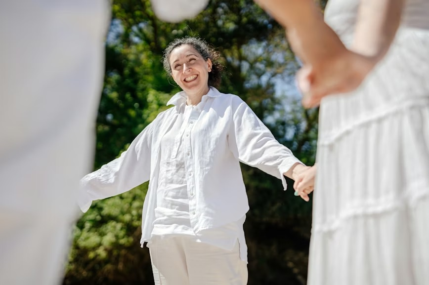
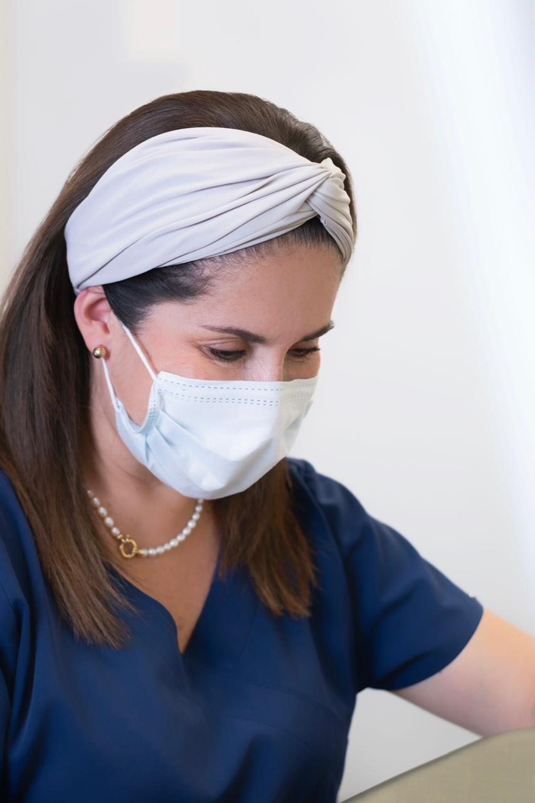
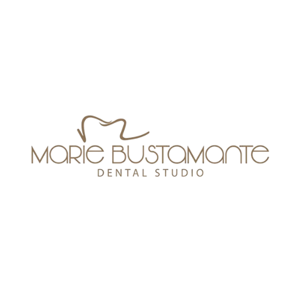

Dra. Marie Bustamante
El arte de sonreir en equilibrio
Soy la Dra. Marie Bustamante, odontóloga por vocación y pasión. La odontología, para mí, es una forma de arte donde cada detalle importa. Después de más de 25 años de experiencia, he aprendido que lograr una sonrisa armónica no solo depende de la técnica, sino del equilibrio entre función, estética y bienestar. Mi enfoque combina ciencia, sensibilidad y precisión, buscando resultados naturales que respeten la esencia de cada persona. Cada tratamiento es diseñado cuidadosamente, como una obra única, donde la armonía del rostro, la mordida y la expresión se integran en perfecto balance.

EL ORIGEN DE TU CALMA
Priorizamos tu tranquilidad.
Sabemos que para muchas personas, ir al dentista puede generar temor, ansiedad o incluso recordar experiencias pasadas difíciles. Por eso, hemos creado un espacio donde todo está pensado para cambiar esa percepción. Desde el ambiente hasta la forma en que te acompañamos, buscamos que te sientas seguro, escuchado y en confianza desde el primer momento, Aquí, cada consulta es una experiencia distinta: sin apuros, sin presión, con empatía y cuidado genuino.

ESTÉTICA Y BIENESTAR
Una sonrisa no solo transforma el rostro, también transforma la manera cómo te sientes contigo mismo. Nos especializamos en estética y rehabilitación oral, logrando resultados que no solo se ven bien, sino que se sienten bien. Trabajamos respetando la funcionalidad, la naturalidad y tu salud integral. Porque cuando hay armonía en tu sonrisa, hay bienestar en tu vida.
JUNIOR (de 4 a 15 años)
PREMIUM: 16 años a +
JUNIOR
- Diseño de sonrisa
- Ortodoncia temprana
- Prevención de caries
- Limpieza
- Procedimientos
PREMIUM
- Diseño de sonrisa
- Ortodoncia
- Limpieza
- Procedimientos


LA SONRISA COMO EJE
Tu salud fluye cuando tu boca está en armonía. Respirar, digerir y sostenerte con libertad es el verdadero propósito.
La mordida es el eje de equilibrio de todo el sistema. Un desbalance puede generar desgaste dental, tensión muscular, dolores en la cara, cabeza e incluso afectar la postura. Por eso, analizamos cada caso de manera integral, incluyendo el uso de férulas de relajación cuando es necesario para devolver estabilidad, descanso y bienestar. Pequeños ajustes pueden generar grandes cambios en tu calidad de vida.

EXPERIENCIA PERSONALIZADA
Transformamos tu visita en una pausa de bienestar absoluta.
Cada persona es única, y así debe ser su tratamiento. Nos tomamos el tiempo de escucharte, entenderte y acompañarte en cada paso. Aquí no eres un paciente más, eres alguien importante para nosotros. Transformamos tu visita en una pausa de bienestar: un espacio donde puedes relajarte, sentirte cuidado y confiar plenamente en que estás en las mejores manos.

TE ESPERAMOS
Permítenos acompañarte hacia tu versión más saludable y radiante.
AGENDA UNA CITA